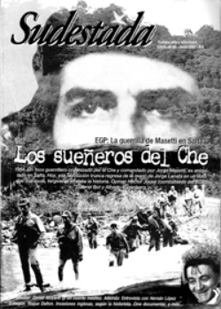

Buscar
Historias del "buen salvaje"
Durante toda su extraordinaria obra literaria, Daniel Moyano eludió con talento los vicios del regionalismo tradicional.
Edición N° 59
Junio 2007
Revista bimensual
Comprar edición impresaSumario
- La guerrilla del EGP: los sueñeros del Che
- Unos duraznos blancos y muy dulces
- "Muertos de amor", o la historia como folletín grotesco
- Historias del "buen salvaje"
- Daniel Moyano: narrativa en clave de sol
- Salar de Uyuni, Bolivia
- Las invasiones inglesas según la historieta
- Hernán López Echagüe: voces del litoral
Compartir Articulo
Durante toda su extraordinaria obra literaria, Daniel Moyano eludió con talento los vicios del regionalismo tradicional. Es decir, buscó (y logró) con su literatura romper el molde de aquello que desde Buenos Aires se esperaba en un escritor "de provincia". El prejuicio y el lugar común se impone todavía en ciertas miradas hacia el interior del país, a la espera de un reflejo repetido, vacío de toda sensibilidad, de un universo ajeno que se ignora y, por eso, se encasilla desde la pereza que se impone en las grandes redacciones. A pesar de esfuerzos creativos, todavía hoy leemos crónicas que, en lugar de perseguir los rasgos y huellas fascinantes, se ocupan de "descender" al interior desde la mirada turística.
Buenos Aires es ciega y, además, soberbia. Lo demás no existe. O en todo caso, lo demás es "exótico", es "provinciano". De algún modo, repite el prejuicio del europeo ante un género latinoamericano que tuvo mucho éxito comercial del otro lado del océano: el realismo mágico. Lo excesivo y fantástico, la naturaleza dominante, el "buen salvaje", tal como lo definía Juan José Saer a ese dibujo con trazos gruesos para el consumo del atento lector europeo, ávido de nuevas historias "exóticas". Buenos Aires repite los tópicos con las historias periféricas: parece que nunca surge nada nuevo, que lo regional y lo tradicional van de la mano y que, claro, siempre es necesario mirar al interior pero nunca hay tiempo y menos espacio para reflejar algo más que los lugares comunes que se repiten en cuanto suplemento literario se publique.
Pero hay que intentar romper la madeja del lugar común, saltar la barrera de lo previsible y rastrear con humildad las huellas de un mundo que se nos hace inabordable desde nuestra realidad. Pero hay que intentarlo: reflejar la obra de Daniel Moyano, viajar a Córdoba y contar la experiencia de la Biblioteca Popular Bella Vista, o convivir varios días con los trabajadores de Zanon en Neuquen, son intentos en ese sentido. Mínimos, insuficientes, pero muy enriquecedores. Por eso esta idea de comenzar a profundizar la crónica en regiones olvidadas por los grandes medios. Porque la única forma de romper lo establecido, es intentarlo. Una y otra vez.
Comentarios

Sudestada
El colectivo de Revista Sudestada esta integrado por Ignacio Portela, Hugo Montero, Walter Marini, Leandro Albani, Martín Latorraca, Pablo Fernández y Repo Bandini.
Articulos más vistos


LIBRERÍA SUDESTADA

Colección infantil

Distribuidora de Libros

Suscripción

Sudestada en URUGUAY

Otros articulos de esta edición
Las invasiones inglesas según la historieta
La Unión de Historietistas e Ilustradores de Tucumán (unhil), cultores de la historieta histórica como símbolo de identidad y herramienta ...
"Muertos de amor", o la historia como folletín grotesco
JORGE LANATA y "Muertos de amor"
La guerrilla del EGP: los sueñeros del Che
Silencio, olvido, mentira. La historia del EGP permaneció durante décadas oculta en las entrañas de la tierra. Comandado por Jorge ...
Daniel Moyano: narrativa en clave de sol
Músico de alma, escritor por las noches, plomero o albañil cuando fuese necesario, todos y cada uno de esos personajes ...
Hernán López Echagüe: voces del litoral
Crónica del ocaso: Apuntes sobre las papeleras y la devastación del litoral argentino y uruguayo, es el nuevo libro de ...
Unos duraznos blancos y muy dulces
Por los años 42 o 43, en Alta Gracia, mi primo y yo íbamos todos los jueves a la plaza ...